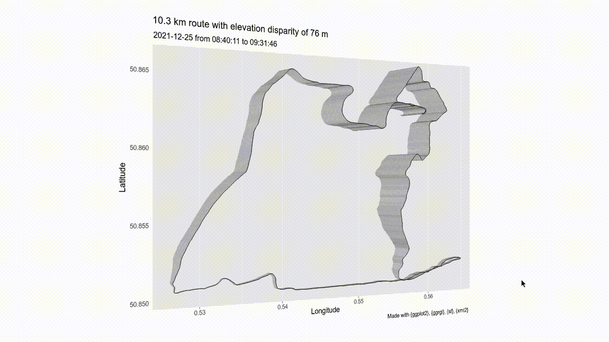
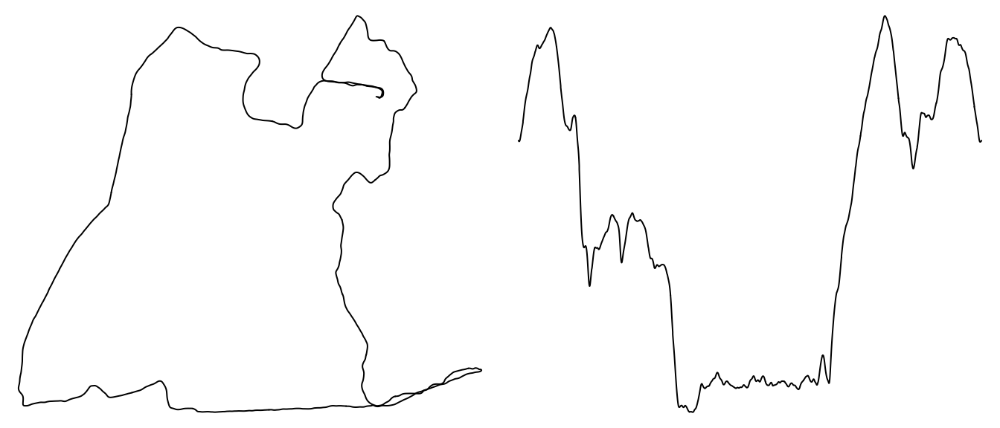

install.packages("remotes") # if not yet installed
remotes::install_github("matt-dray/gpx3d")
tl;dr
You can use R to extract coordinate and elevation data from a GPX file and then plot it as an interactive 3D object. I put some functions in the tiny R package {gpx3d} to help do this.
Elevate to accumulate
I’ve seen recently on Twitter some people using Marcus Volz’s {strava} R package to create pleasing visualisations of their running routes as small-multiples.
I don’t use Strava, but I downloaded my Apple Health data this week and it contained a folder of GPX files; one for each ‘workout’ activity recorded via my Apple Watch.1 GPX files are basically just a type of XML used for storing GPS-related activity.
But rather than try to emulate {strava}, I thought it might be ‘fun’ to incorporate the elevation data from a GPX as a third dimension. I’ve also had mikefc’s {ggrgl} package—‘a 3D extension to ggplot’—on my to-do list for a while now.
An alternate dimension
Cut to the chase: I made a tiny package called {gpx3d}. For now it does what I want it to do and it works on my machine.
You can download it from GitHub with help from the {remotes} package.
There are a number of dependencies, including many that are not available on CRAN; see the README for {ggrgl} for details. You must also install XQuartz, if you haven’t already.
The package does two things and has two exported functions:
extract_gpx3d()gets the data out of a GPX file (i.e. it reads a GPX file; parses the XML; extracts datetime, latitude, longitude and elevation; converts to sf-class; and calculates the distance covered)plot_gpx3d()plots the data as an interactive 3D object (i.e. it takes the output fromextract_gpx3d(), generates a ‘3D ggplot’ using {ggrgl} and renders it as an interactive object to an external device)
There are also two demo datasets:
segment.gpx, a GPX file containing a shorter, edited version of the route used in this blogpost, which you can access withsystem.file("extdata", "segment.gpx", package = "gpx3d")after installing the packagegpx_segment, an sf-class data.frame that’s the result of using theextract_gpx3d()on the built-insegment.gpxfile
Read on for an explanation and examples.
Extract
There are already functions that can help read GPX files into R, like gpx::read_gpx() and plotKML::readGPX(), but I decided to do it by hand with {xml2} to get a custom output format (and to practice handling XML).
In short, the extract_gpx3d() function uses read_xml() to read the GPX file, then as_list() to convert it to a deeply nested list. A little wrangling is then required to create a data.frame: datetime and elevation can be hoisted out of the list okay, but the longitude and latitude are actually extracted from the attributes.
After this, the data.frame is converted to the ‘geography-aware’ sf-class.2 I’ve done this for two reasons: (1) the output object can be taken away and will play nicely with various {sf} functions, letting you create various maps and perform further processing, and (2) it allowed me to calculate the distance between each recorded point, which could be summed for total distance.
To use extract_gpx3d(), simply pass a path to a GPX file. I’ve chosen a 10 km run I took on Christmas morning,3 which I downloaded from Apple Health and stored locally.4
file <- "~/Documents/data/apple_health_export/workout-routes/route_2021-12-25_10.31am.gpx"
route <- gpx3d::extract_gpx3d(file)
route[2000:2004, ]Simple feature collection with 5 features and 5 fields
Geometry type: POINT
Dimension: XY
Bounding box: xmin: 0.559015 ymin: 50.85109 xmax: 0.559273 ymax: 50.85109
Geodetic CRS: WGS 84
time ele lon lat geometry
2000 2021-12-25 09:13:29 8.406136 0.559273 50.85109 POINT (0.559273 50.85109)
2001 2021-12-25 09:13:30 8.498508 0.559209 50.85109 POINT (0.559209 50.85109)
2002 2021-12-25 09:13:31 8.599027 0.559144 50.85109 POINT (0.559144 50.85109)
2003 2021-12-25 09:13:32 8.721706 0.559079 50.85109 POINT (0.559079 50.85109)
2004 2021-12-25 09:13:34 8.858613 0.559015 50.85109 POINT (0.559015 50.85109)
distance
2000 4.564465 [m]
2001 4.494285 [m]
2002 4.564465 [m]
2003 4.564465 [m]
2004 4.492909 [m]You can see the rows are basically a measurement per second (time) of the coordinates (lon and lat) and elevation (ele), and that the sf-class metadata and geometry column are present, along with the distance in metres from the previous to current point.
You can take this dataset away and do other stuff with it, like create a lat-long plot of the route (below left), or the elevation over time (below right).
par(mfrow = c(1, 2), mar = rep(0, 4))
with(route, plot(lon, lat, type = "l", axes = FALSE))
with(route, plot(time, ele, type = "l", axes = FALSE))
If you’re wondering about the little ‘tail’ in the bottom right of the route, I accidentally joined the back of a Parkrun, so quickly did a hairpin turn to escape. Except the Parkrun route is a ‘there-and-back’ course, so the confused stewards thought I was now in the lead with a pace of about two minutes per kilometre. Whoops!
The elevation plot is pretty dramatic: roughly, it goes downhill to a small plateau, down again to a flatter plateau, then the inevitable (steep!) climb. The lowest plateau is along the seafront, so basically sea level.
But boo! Only two dimensions? You can instead use the plotting function built in to {gpx3d} for something a bit more exciting.
Plot
All the hard work of plotting is done primarily by {ggplot2} and {ggrgl}. The former is probably well-known to readers; the latter is an extension written by mikefc to introduce a third dimension to ggplot objects. In other words, you can extrude your plot along some third variable to generate a z-axis.
There’s a whole bunch of specialised 3D geoms in {ggrgl}. For my purposes, I wanted to extend a geom_path() line plot into the third dimension. This is achieved by adding a z argument to the aes() call of the geom_path_3d() function, where z is our elevation data.
And so the plot_gpx3d() function in {gpx3d} renders the plot as an interactive 3D object with {rgl} to an external devoutrgl::rgldev() graphics device.5 You can then click and drag it with your mouse and use the scrollwheel to zoom. I’ve embedded a gif of the output at the top of this thread.6
gpx3d::plot_gpx3d(route)You can see why I chose this particular route for the demo; it really shows off the power of the elevation data. I ran anti-clockwise downhill to the seafront, where it was almost entirely flat, before running back up a relatively sharp ascent.
Might have made a nice print if I’d been gifted a 3D printer for Christmas!
Note
I was originally able to embed the interactive 3D graphic in this post, but it failed to work when I ported this blog over to Quarto in 2023. Maybe I’ll try to fix it one day.
A romance of many dimensions
I’ve made {gpx3d} entirely for my own amusement, so your kilometreage may vary. At this point I can’t make any guarantees about whether it will even work on your machine, but hopefully I’ll find time in future to make sure it does. It might also be nice to include more user options for adjusting the output so you aren’t stuck with ‘ggplot grey’ and the same defaults mikefc used in a vignette showing a {ggrgl} version of Minard’s famous visulisation of Napoleon’s march.7
I’ll also be thinking about developing {gpx4d} and functions like geom_tesseract(), but I might need physics to catch up first.
Environment
Session info
Last rendered: 2023-08-20 22:39:35 BSTR version 4.3.1 (2023-06-16)
Platform: aarch64-apple-darwin20 (64-bit)
Running under: macOS Ventura 13.2.1
Matrix products: default
BLAS: /Library/Frameworks/R.framework/Versions/4.3-arm64/Resources/lib/libRblas.0.dylib
LAPACK: /Library/Frameworks/R.framework/Versions/4.3-arm64/Resources/lib/libRlapack.dylib; LAPACK version 3.11.0
locale:
[1] en_US.UTF-8/en_US.UTF-8/en_US.UTF-8/C/en_US.UTF-8/en_US.UTF-8
time zone: Europe/London
tzcode source: internal
attached base packages:
[1] stats graphics grDevices utils datasets methods base
loaded via a namespace (and not attached):
[1] jsonlite_1.8.7 dplyr_1.1.2 compiler_4.3.1 tidyselect_1.2.0
[5] Rcpp_1.0.11 xml2_1.3.5 gpx3d_0.0.0.9002 yaml_2.3.7
[9] fastmap_1.1.1 R6_2.5.1 generics_0.1.3 classInt_0.4-9
[13] s2_1.1.4 sf_1.0-14 knitr_1.43.1 htmlwidgets_1.6.2
[17] tibble_3.2.1 units_0.8-2 DBI_1.1.3 pillar_1.9.0
[21] rlang_1.1.1 utf8_1.2.3 xfun_0.39 cli_3.6.1
[25] magrittr_2.0.3 class_7.3-22 wk_0.7.3 digest_0.6.33
[29] grid_4.3.1 rstudioapi_0.15.0 fontawesome_0.5.1 lifecycle_1.0.3
[33] vctrs_0.6.3 KernSmooth_2.23-22 proxy_0.4-27 evaluate_0.21
[37] glue_1.6.2 fansi_1.0.4 e1071_1.7-13 rmarkdown_2.23
[41] tools_4.3.1 pkgconfig_2.0.3 htmltools_0.5.5 Footnotes
I wrote earlier in the year about wrangling my Nike Run Club data via Apple Health. It seems as though NRC doesn’t pass geographic information to Health, but now I also record my runs via the Workout app on the watch, which does regurgitate the geo-related data.↩︎
Or you can return a simpler data.frame without the sf-class by passing
sf_out = FALSEtoextract_gpx3d().↩︎In a place I do not live, so minimal opsec-leaking here.↩︎
You could try using the demo GPX file that’s included in the package, using
file <- system.file("extdata", "segment.gpx", package = "gpx3d")↩︎Note that you can also set the argument
route_onlytoTRUEto get rid of all the chart elements and leave behind the path only.↩︎I originally managed to embed the interactive object in the blog itself after peeking at mikefc’s vignettes for {ggrgl}, but this seemed to fail when I later tried to re-render the post. I’ve left the code I used to do this in the source of this post (in the hidden chunks labelled ‘plot-unused’ and ‘rglwidget-unused’) if you want to check it out yourself.↩︎
I also realised later that Tyler Morgan-Wall already did something like this with {rayshader}. I should have guessed.↩︎
Reuse
CC BY-NC-SA 4.0